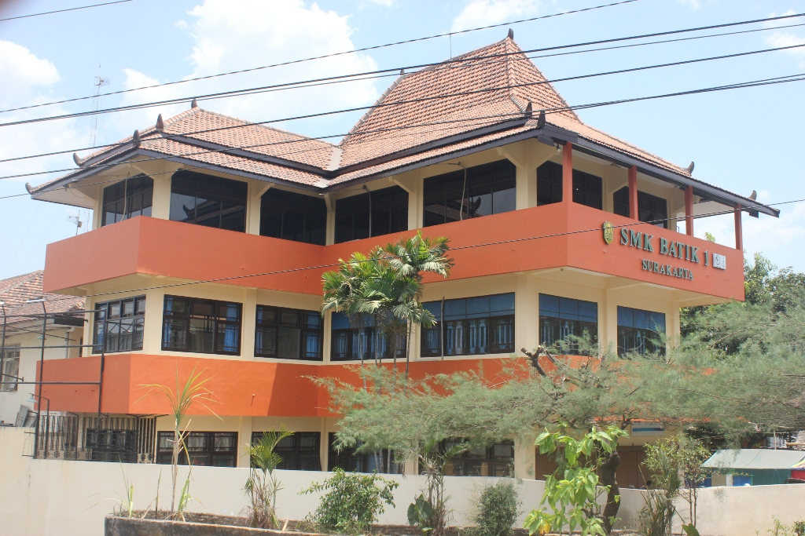

Temukan jurusan yang sesuai dengan passion dan masa depanmu
Grafis, ilustrasi & media kreatif digital
Keuangan, pembukuan & manajemen bisnis
Pemasaran digital & e-commerce modern
Jaringan komputer & infrastruktur IT
Ilmu obat-obatan & pelayanan kesehatan
Administrasi & komunikasi bisnis

SMK Batik 1 Surakarta adalah sekolah kejuruan unggulan yang berdiri sejak 1967 di kota Solo. Kami berkomitmen mencetak lulusan yang kompeten, berkarakter, dan siap kerja di bidangnya.
Tahun Berdiri
Program Studi
Siswa Aktif
Akreditasi
Informasi terkini seputar SMK Batik 1 Surakarta
Tim DKV SMK Batik 1 Surakarta berhasil meraih juara pertama dalam kompetisi desain batik tingkat nasional...
Baca Selengkapnya →SMK Batik 1 Surakarta membuka pendaftaran PPDB untuk tahun ajaran baru dengan berbagai program unggulan...
Baca Selengkapnya →Kerjasama strategis antara SMK Batik 1 Surakarta dengan perusahaan farmasi ternama untuk magang siswa...
Baca Selengkapnya →Pengalaman nyata dari alumni SMK Batik 1 Surakarta
"SMK Batik 1 mengajarkan saya skill desain yang langsung bisa dipakai kerja. Sekarang saya kerja di studio kreatif di Jakarta!"
"Guru-gurunya sabar dan profesional. Ilmu akuntansi yang saya dapat di sini sangat membantu karir saya sekarang."
"Fasilitas lab TKJ sangat lengkap. Saya langsung diterima kerja sebagai teknisi jaringan setelah lulus!"
"Program magang di farmasi beneran membantu. Sekarang saya lanjut kuliah farmasi sambil kerja paruh waktu."